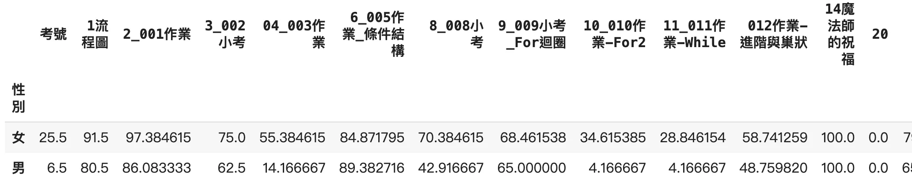
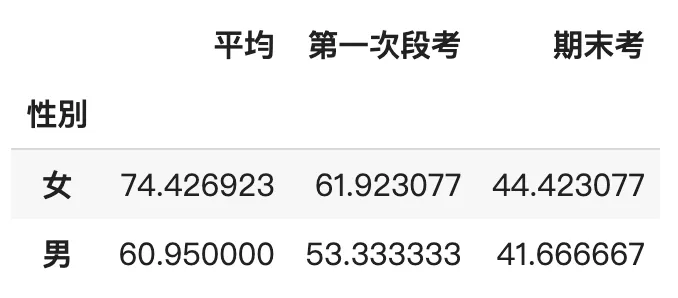
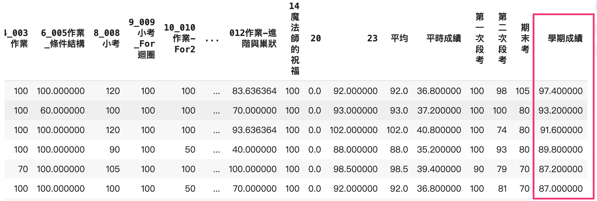
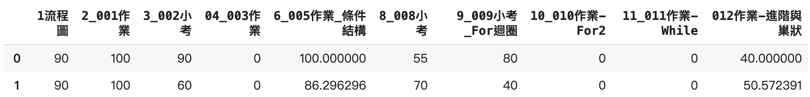
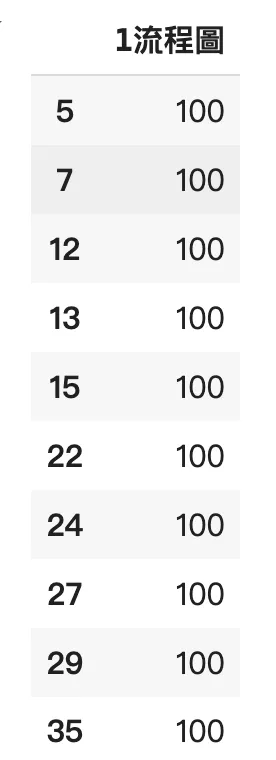
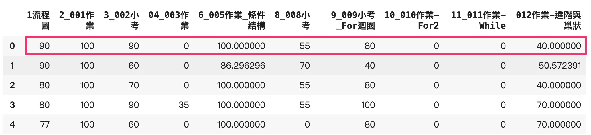
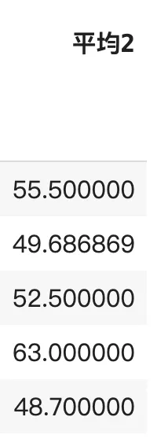

資料科學第四週-資料處理常用操作
學習Python處理資料的新技巧！用groupby()分組比較成績，發現女生表現較好。用sort_values()輕鬆排序成績，避免極端值影響結果。nlargest()輕鬆取前幾高分，apply()更彈性運算，還能用lambda簡化程式碼。用這些技巧輕鬆處理資料，讓分析更輕鬆！
以前面的資料為延續，繼續介紹幾個常用到的函式
超級好用的groupby()
類似於Excel的樞紐分析，進行分組，先以性別試看看
1 | |

1 | |

女生不論在平均成績、段考或期末考，平均都高於男生
成績由高到低排列sort_values()
將成績由高到低排列是常用的功能，其中參數ascending意思為是否遞增
試著以學期成績做排序
1 | |

取部分成績作平均
因為整個學期會很很多次小考與作業，取部分成績的好處是，剔除極端低的數值，不要因為一兩次不認真，拖累到整體成績，跟剛才一樣先取出要計算的範圍
1 | |

nlargest()取每欄前n大的值
1 | |

可以很輕易的取出流程圖這次作業前十高的分數，但是要怎麼取一個同學（一整列）的前十高分數呢？
進階：要怎麼取列，使用apply()
有些函式並不支援直接對axis=1來做運算
1 | |

可以使用apply()是對每一個axis，進行函式操作，順便也可以先了解一下python中的lambda是什麼？
lambda 是什麼
1 | |
上面是學過的定義函式
使用lambda可以更簡化只有簡單條件的函式，稱之為匿名函式
1 | |
apply()與nlargest()
apply()是對每一個axis，進行函式操作，以axis=1 來說，就是對一整列做事情

1 | |

資料科學第四週-資料處理常用操作
https://codinglu.tw/2024/09/data-process-groupby/
📌 本文瀏覽量：
0 次